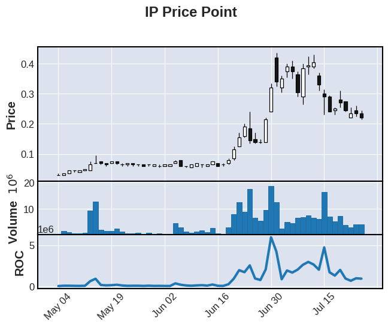

<!DOCTYPE html>

<html>
  <head>
    <meta charset="utf-8" />
<script data-ad-client="ca-pub-2479144310234386" async src="https://pagead2.googlesyndication.com/pagead/js/adsbygoogle.js"></script>
    <meta name="viewport" content="width=device-width, initial-scale=1.0" /><meta name="generator" content="Docutils 0.17.1: http://docutils.sourceforge.net/" />

    <title>&lt;no title&gt; &#8212; Investing Reference Book</title>
    
  <!-- Loaded before other Sphinx assets -->
  <link href="../../_static/styles/theme.css?digest=1999514e3f237ded88cf" rel="stylesheet">
<link href="../../_static/styles/pydata-sphinx-theme.css?digest=1999514e3f237ded88cf" rel="stylesheet">

    
  <link rel="stylesheet"
    href="../../_static/vendor/fontawesome/5.13.0/css/all.min.css">
  <link rel="preload" as="font" type="font/woff2" crossorigin
    href="../../_static/vendor/fontawesome/5.13.0/webfonts/fa-solid-900.woff2">
  <link rel="preload" as="font" type="font/woff2" crossorigin
    href="../../_static/vendor/fontawesome/5.13.0/webfonts/fa-brands-400.woff2">

    <link rel="stylesheet" type="text/css" href="../../_static/pygments.css" />
    <link rel="stylesheet" href="../../_static/styles/sphinx-book-theme.css?digest=5115cc725059bd94278eecd172e13a965bf8f5a9" type="text/css" />
    <link rel="stylesheet" type="text/css" href="../../_static/togglebutton.css" />
    <link rel="stylesheet" type="text/css" href="../../_static/copybutton.css" />
    <link rel="stylesheet" type="text/css" href="../../_static/mystnb.css" />
    <link rel="stylesheet" type="text/css" href="../../_static/sphinx-thebe.css" />
    <link rel="stylesheet" type="text/css" href="../../_static/design-style.b7bb847fb20b106c3d81b95245e65545.min.css" />
    
  <!-- Pre-loaded scripts that we'll load fully later -->
  <link rel="preload" as="script" href="../../_static/scripts/pydata-sphinx-theme.js?digest=1999514e3f237ded88cf">

    <script data-url_root="../../" id="documentation_options" src="../../_static/documentation_options.js"></script>
    <script src="../../_static/jquery.js"></script>
    <script src="../../_static/underscore.js"></script>
    <script src="../../_static/doctools.js"></script>
    <script src="../../_static/clipboard.min.js"></script>
    <script src="../../_static/copybutton.js"></script>
    <script src="../../_static/scripts/sphinx-book-theme.js?digest=9c920249402e914e316237a7dbc6769907cce411"></script>
    <script>let toggleHintShow = 'Click to show';</script>
    <script>let toggleHintHide = 'Click to hide';</script>
    <script>let toggleOpenOnPrint = 'true';</script>
    <script src="../../_static/togglebutton.js"></script>
    <script>var togglebuttonSelector = '.toggle, .admonition.dropdown, .tag_hide_input div.cell_input, .tag_hide-input div.cell_input, .tag_hide_output div.cell_output, .tag_hide-output div.cell_output, .tag_hide_cell.cell, .tag_hide-cell.cell';</script>
    <script src="../../_static/design-tabs.js"></script>
    <script>const THEBE_JS_URL = "https://unpkg.com/thebe@0.8.2/lib/index.js"
const thebe_selector = ".thebe,.cell"
const thebe_selector_input = "pre"
const thebe_selector_output = ".output, .cell_output"
</script>
    <script async="async" src="../../_static/sphinx-thebe.js"></script>
    <link rel="index" title="Index" href="../../genindex.html" />
    <link rel="search" title="Search" href="../../search.html" />
    <meta name="viewport" content="width=device-width, initial-scale=1" />
    <meta name="docsearch:language" content="None">
    

    <!-- Google Analytics -->
    
  </head>
  <body data-spy="scroll" data-target="#bd-toc-nav" data-offset="60">
<!-- Checkboxes to toggle the left sidebar -->
<input type="checkbox" class="sidebar-toggle" name="__navigation" id="__navigation" aria-label="Toggle navigation sidebar">
<label class="overlay overlay-navbar" for="__navigation">
    <div class="visually-hidden">Toggle navigation sidebar</div>
</label>
<!-- Checkboxes to toggle the in-page toc -->
<input type="checkbox" class="sidebar-toggle" name="__page-toc" id="__page-toc" aria-label="Toggle in-page Table of Contents">
<label class="overlay overlay-pagetoc" for="__page-toc">
    <div class="visually-hidden">Toggle in-page Table of Contents</div>
</label>
<!-- Headers at the top -->
<div class="announcement header-item noprint"></div>
<div class="header header-item noprint"></div>

    
    <div class="container-fluid" id="banner"></div>

    

    <div class="container-xl">
      <div class="row">
          
<!-- Sidebar -->
<div class="bd-sidebar noprint" id="site-navigation">
    <div class="bd-sidebar__content">
        <div class="bd-sidebar__top"><div class="navbar-brand-box">
    <a class="navbar-brand text-wrap" href="../../index.html">
      
        <!-- `logo` is deprecated in Sphinx 4.0, so remove this when we stop supporting 3 -->
        
      
      
      
      
      
      <h1 class="site-logo" id="site-title">Investing Reference Book</h1>
      
    </a>
</div><form class="bd-search d-flex align-items-center" action="../../search.html" method="get">
  <i class="icon fas fa-search"></i>
  <input type="search" class="form-control" name="q" id="search-input" placeholder="Search this book..." aria-label="Search this book..." autocomplete="off" >
</form><nav class="bd-links" id="bd-docs-nav" aria-label="Main">
    <div class="bd-toc-item active">
        <p aria-level="2" class="caption" role="heading">
 <span class="caption-text">
  Custom Content
 </span>
</p>
<ul class="nav bd-sidenav">
 <li class="toctree-l1">
  <a class="reference internal" href="../../docs/introduction.html">
   Summary
  </a>
 </li>
 <li class="toctree-l1">
  <a class="reference internal" href="../../docs/ch1_trade_rules_to_live_by.html">
   Rules for Trading
  </a>
 </li>
 <li class="toctree-l1 has-children">
  <a class="reference internal" href="../../docs/ch2_code_4trading.html">
   Code For Trading
  </a>
  <input class="toctree-checkbox" id="toctree-checkbox-1" name="toctree-checkbox-1" type="checkbox"/>
  <label for="toctree-checkbox-1">
   <i class="fas fa-chevron-down">
   </i>
  </label>
  <ul>
   <li class="toctree-l2">
    <a class="reference internal" href="../../docs/code/projects.html">
     Projects
    </a>
   </li>
   <li class="toctree-l2">
    <a class="reference internal" href="../../docs/code/task_list.html">
     Tasks
    </a>
   </li>
  </ul>
 </li>
 <li class="toctree-l1">
  <a class="reference internal" href="../../docs/ch4_parameters.html">
   Parameters
  </a>
 </li>
 <li class="toctree-l1 has-children">
  <a class="reference internal" href="../../docs/ch5_afterthoughts.html">
   Afterthoughts
  </a>
  <input class="toctree-checkbox" id="toctree-checkbox-2" name="toctree-checkbox-2" type="checkbox"/>
  <label for="toctree-checkbox-2">
   <i class="fas fa-chevron-down">
   </i>
  </label>
  <ul>
   <li class="toctree-l2">
    <a class="reference internal" href="../../docs/afterthoughts/2020_thoughts.html">
     2020 Thoughts
    </a>
   </li>
   <li class="toctree-l2">
    <a class="reference internal" href="../../docs/afterthoughts/2021_thoughts.html">
     2021 Thoughts
    </a>
   </li>
   <li class="toctree-l2">
    <a class="reference internal" href="../../docs/afterthoughts/2022_thoughts.html">
     2022 Thoughts
    </a>
   </li>
   <li class="toctree-l2">
    <a class="reference internal" href="../../docs/afterthoughts/Industry_notes_trends.html">
     Industry trends
    </a>
   </li>
  </ul>
 </li>
 <li class="toctree-l1 has-children">
  <a class="reference internal" href="../../docs/ch6_predictions.html">
   Predictions
  </a>
  <input class="toctree-checkbox" id="toctree-checkbox-3" name="toctree-checkbox-3" type="checkbox"/>
  <label for="toctree-checkbox-3">
   <i class="fas fa-chevron-down">
   </i>
  </label>
  <ul>
   <li class="toctree-l2">
    <a class="reference internal" href="../../docs/predictions/2020_eoy_predictions.html">
     2020 EOY predictions
    </a>
   </li>
   <li class="toctree-l2">
    <a class="reference internal" href="../../docs/predictions/2022_stonk_predictions.html">
     2022 Stonk predictions
    </a>
   </li>
  </ul>
 </li>
 <li class="toctree-l1 has-children">
  <a class="reference internal" href="../references/ReadMe.html">
   Notebooks
  </a>
  <input class="toctree-checkbox" id="toctree-checkbox-4" name="toctree-checkbox-4" type="checkbox"/>
  <label for="toctree-checkbox-4">
   <i class="fas fa-chevron-down">
   </i>
  </label>
  <ul>
   <li class="toctree-l2">
    <a class="reference internal" href="../references/Returns.html">
     Returns
    </a>
   </li>
   <li class="toctree-l2">
    <a class="reference internal" href="../references/WeightsGeneration.html">
     Weights Generation
    </a>
   </li>
   <li class="toctree-l2">
    <a class="reference internal" href="../references/Performance.html">
     Performance
    </a>
   </li>
  </ul>
 </li>
 <li class="toctree-l1">
  <a class="reference internal" href="../../docs/notes_from_courses.html">
   Course Notes
  </a>
 </li>
 <li class="toctree-l1">
  <a class="reference internal" href="../../docs/glossary.html">
   Glossary
  </a>
 </li>
</ul>
<p aria-level="2" class="caption" role="heading">
 <span class="caption-text">
  Legacy Content
 </span>
</p>
<ul class="nav bd-sidenav">
 <li class="toctree-l1">
  <a class="reference internal" href="../../docs/about_py.html">
   About Python
  </a>
 </li>
 <li class="toctree-l1">
  <a class="reference internal" href="../../docs/getting_started.html">
   Setting up Your Python Environment
  </a>
 </li>
 <li class="toctree-l1">
  <a class="reference internal" href="../../docs/python_by_example.html">
   An Introductory Example
  </a>
 </li>
 <li class="toctree-l1">
  <a class="reference internal" href="../../docs/learn_more.html">
   Learn More
  </a>
 </li>
</ul>

    </div>
</nav></div>
        <div class="bd-sidebar__bottom">
             <!-- To handle the deprecated key -->
            
            <div class="navbar_extra_footer">
            Powered by <a href="https://jupyterbook.org">Jupyter Book</a>
            </div>
            
        </div>
    </div>
    <div id="rtd-footer-container"></div>
</div>


          


          
<!-- A tiny helper pixel to detect if we've scrolled -->
<div class="sbt-scroll-pixel-helper"></div>
<!-- Main content -->
<div class="col py-0 content-container">
    
    <div class="header-article row sticky-top noprint">
        


<div class="col py-1 d-flex header-article-main">
    <div class="header-article__left">
        
        <label for="__navigation"
  class="headerbtn"
  data-toggle="tooltip"
data-placement="right"
title="Toggle navigation"
>
  

<span class="headerbtn__icon-container">
  <i class="fas fa-bars"></i>
  </span>

</label>

        
    </div>
    <div class="header-article__right">
<div class="menu-dropdown menu-dropdown-launch-buttons">
  <button class="headerbtn menu-dropdown__trigger"
      aria-label="Launch interactive content">
      <i class="fas fa-rocket"></i>
  </button>
  <div class="menu-dropdown__content">
    <ul>
      <li>
        <a href="https://mybinder.org/v2/gh/dli-invest/iref-book/master?urlpath=lab/tree/ibook/notebooks/analyze/pandas_ta_plots_ip.ipynb"
   class="headerbtn"
   data-toggle="tooltip"
data-placement="left"
title="Launch on Binder"
>
  

<span class="headerbtn__icon-container">
  
    
  </span>
<span class="headerbtn__text-container">Binder</span>
</a>

      </li>
      
      <li>
        <a href="https://colab.research.google.com/github/dli-invest/iref-book/blob/master/ibook/notebooks/analyze/pandas_ta_plots_ip.ipynb"
   class="headerbtn"
   data-toggle="tooltip"
data-placement="left"
title="Launch on Colab"
>
  

<span class="headerbtn__icon-container">
  
    
  </span>
<span class="headerbtn__text-container">Colab</span>
</a>

      </li>
      
    </ul>
  </div>
</div>

<button onclick="toggleFullScreen()"
  class="headerbtn"
  data-toggle="tooltip"
data-placement="bottom"
title="Fullscreen mode"
>
  

<span class="headerbtn__icon-container">
  <i class="fas fa-expand"></i>
  </span>

</button>

<div class="menu-dropdown menu-dropdown-repository-buttons">
  <button class="headerbtn menu-dropdown__trigger"
      aria-label="Source repositories">
      <i class="fab fa-github"></i>
  </button>
  <div class="menu-dropdown__content">
    <ul>
      <li>
        <a href="https://github.com/dli-invest/iref-book"
   class="headerbtn"
   data-toggle="tooltip"
data-placement="left"
title="Source repository"
>
  

<span class="headerbtn__icon-container">
  <i class="fab fa-github"></i>
  </span>
<span class="headerbtn__text-container">repository</span>
</a>

      </li>
      
      <li>
        <a href="https://github.com/dli-invest/iref-book/issues/new?title=Issue%20on%20page%20%2Fnotebooks/analyze/pandas_ta_plots_ip.html&body=Your%20issue%20content%20here."
   class="headerbtn"
   data-toggle="tooltip"
data-placement="left"
title="Open an issue"
>
  

<span class="headerbtn__icon-container">
  <i class="fas fa-lightbulb"></i>
  </span>
<span class="headerbtn__text-container">open issue</span>
</a>

      </li>
      
      <li>
        <a href="https://github.com/dli-invest/iref-book/edit/master/ibook/notebooks/analyze/pandas_ta_plots_ip.ipynb"
   class="headerbtn"
   data-toggle="tooltip"
data-placement="left"
title="Edit this page"
>
  

<span class="headerbtn__icon-container">
  <i class="fas fa-pencil-alt"></i>
  </span>
<span class="headerbtn__text-container">suggest edit</span>
</a>

      </li>
      
    </ul>
  </div>
</div>

<div class="menu-dropdown menu-dropdown-download-buttons">
  <button class="headerbtn menu-dropdown__trigger"
      aria-label="Download this page">
      <i class="fas fa-download"></i>
  </button>
  <div class="menu-dropdown__content">
    <ul>
      <li>
        <a href="../../_sources/notebooks/analyze/pandas_ta_plots_ip.ipynb"
   class="headerbtn"
   data-toggle="tooltip"
data-placement="left"
title="Download source file"
>
  

<span class="headerbtn__icon-container">
  <i class="fas fa-file"></i>
  </span>
<span class="headerbtn__text-container">.ipynb</span>
</a>

      </li>
      
      <li>
        
<button onclick="printPdf(this)"
  class="headerbtn"
  data-toggle="tooltip"
data-placement="left"
title="Print to PDF"
>
  

<span class="headerbtn__icon-container">
  <i class="fas fa-file-pdf"></i>
  </span>
<span class="headerbtn__text-container">.pdf</span>
</button>

      </li>
      
    </ul>
  </div>
</div>
<label for="__page-toc"
  class="headerbtn headerbtn-page-toc"
  
>
  

<span class="headerbtn__icon-container">
  <i class="fas fa-list"></i>
  </span>

</label>

    </div>
</div>

<!-- Table of contents -->
<div class="col-md-3 bd-toc show noprint">
    <div class="tocsection onthispage pt-5 pb-3">
        <i class="fas fa-list"></i> Contents
    </div>
    <nav id="bd-toc-nav" aria-label="Page">
        <ul class="simple visible nav section-nav flex-column">
</ul>

    </nav>
</div>
    </div>
    <div class="article row">
        <div class="col pl-md-3 pl-lg-5 content-container">
            <!-- Table of contents that is only displayed when printing the page -->
            <div id="jb-print-docs-body" class="onlyprint">
                <h1><no title></h1>
                <!-- Table of contents -->
                <div id="print-main-content">
                    <div id="jb-print-toc">
                        
                        <div>
                            <h2> Contents </h2>
                        </div>
                        <nav aria-label="Page">
                            <ul class="simple visible nav section-nav flex-column">
</ul>

                        </nav>
                    </div>
                </div>
            </div>
            <main id="main-content" role="main">
                
              <div>
                
  <p><a href="https://colab.research.google.com/github/dli-invest/dli-invest.github.io/blob/master/ibook/notebooks/analyze/pandas_ta_plots_ip.ipynb" target="_parent"></a></p>
<div class="cell docutils container">
<div class="cell_input docutils container">
<div class="highlight-ipython3 notranslate"><div class="highlight"><pre><span></span>!pip install mplfinance yfinance
!pip install -U git+https://github.com/twopirllc/pandas-ta
</pre></div>
</div>
</div>
<div class="cell_output docutils container">
<div class="output stream highlight-myst-ansi notranslate"><div class="highlight"><pre><span></span>Requirement already satisfied: mplfinance in /opt/hostedtoolcache/Python/3.10.9/x64/lib/python3.10/site-packages (0.12.9b7)
Requirement already satisfied: yfinance in /opt/hostedtoolcache/Python/3.10.9/x64/lib/python3.10/site-packages (0.1.90)
Requirement already satisfied: matplotlib in /opt/hostedtoolcache/Python/3.10.9/x64/lib/python3.10/site-packages (from mplfinance) (3.6.2)
Requirement already satisfied: pandas in /opt/hostedtoolcache/Python/3.10.9/x64/lib/python3.10/site-packages (from mplfinance) (1.5.2)
Requirement already satisfied: lxml&gt;=4.9.1 in /opt/hostedtoolcache/Python/3.10.9/x64/lib/python3.10/site-packages (from yfinance) (4.9.2)
Requirement already satisfied: multitasking&gt;=0.0.7 in /opt/hostedtoolcache/Python/3.10.9/x64/lib/python3.10/site-packages (from yfinance) (0.0.11)
Requirement already satisfied: numpy&gt;=1.16.5 in /opt/hostedtoolcache/Python/3.10.9/x64/lib/python3.10/site-packages (from yfinance) (1.23.5)
Requirement already satisfied: appdirs&gt;=1.4.4 in /opt/hostedtoolcache/Python/3.10.9/x64/lib/python3.10/site-packages (from yfinance) (1.4.4)
Requirement already satisfied: requests&gt;=2.26 in /opt/hostedtoolcache/Python/3.10.9/x64/lib/python3.10/site-packages (from yfinance) (2.28.1)
Requirement already satisfied: python-dateutil&gt;=2.8.1 in /opt/hostedtoolcache/Python/3.10.9/x64/lib/python3.10/site-packages (from pandas-&gt;mplfinance) (2.8.2)
Requirement already satisfied: pytz&gt;=2020.1 in /opt/hostedtoolcache/Python/3.10.9/x64/lib/python3.10/site-packages (from pandas-&gt;mplfinance) (2022.6)
</pre></div>
</div>
<div class="output stream highlight-myst-ansi notranslate"><div class="highlight"><pre><span></span>Requirement already satisfied: certifi&gt;=2017.4.17 in /opt/hostedtoolcache/Python/3.10.9/x64/lib/python3.10/site-packages (from requests&gt;=2.26-&gt;yfinance) (2022.12.7)
Requirement already satisfied: urllib3&lt;1.27,&gt;=1.21.1 in /opt/hostedtoolcache/Python/3.10.9/x64/lib/python3.10/site-packages (from requests&gt;=2.26-&gt;yfinance) (1.26.13)
Requirement already satisfied: charset-normalizer&lt;3,&gt;=2 in /opt/hostedtoolcache/Python/3.10.9/x64/lib/python3.10/site-packages (from requests&gt;=2.26-&gt;yfinance) (2.1.1)
Requirement already satisfied: idna&lt;4,&gt;=2.5 in /opt/hostedtoolcache/Python/3.10.9/x64/lib/python3.10/site-packages (from requests&gt;=2.26-&gt;yfinance) (3.4)
Requirement already satisfied: fonttools&gt;=4.22.0 in /opt/hostedtoolcache/Python/3.10.9/x64/lib/python3.10/site-packages (from matplotlib-&gt;mplfinance) (4.38.0)
Requirement already satisfied: contourpy&gt;=1.0.1 in /opt/hostedtoolcache/Python/3.10.9/x64/lib/python3.10/site-packages (from matplotlib-&gt;mplfinance) (1.0.6)
Requirement already satisfied: cycler&gt;=0.10 in /opt/hostedtoolcache/Python/3.10.9/x64/lib/python3.10/site-packages (from matplotlib-&gt;mplfinance) (0.11.0)
Requirement already satisfied: pillow&gt;=6.2.0 in /opt/hostedtoolcache/Python/3.10.9/x64/lib/python3.10/site-packages (from matplotlib-&gt;mplfinance) (9.3.0)
Requirement already satisfied: pyparsing&gt;=2.2.1 in /opt/hostedtoolcache/Python/3.10.9/x64/lib/python3.10/site-packages (from matplotlib-&gt;mplfinance) (3.0.9)
Requirement already satisfied: packaging&gt;=20.0 in /opt/hostedtoolcache/Python/3.10.9/x64/lib/python3.10/site-packages (from matplotlib-&gt;mplfinance) (22.0)
Requirement already satisfied: kiwisolver&gt;=1.0.1 in /opt/hostedtoolcache/Python/3.10.9/x64/lib/python3.10/site-packages (from matplotlib-&gt;mplfinance) (1.4.4)
</pre></div>
</div>
<div class="output stream highlight-myst-ansi notranslate"><div class="highlight"><pre><span></span>Requirement already satisfied: six&gt;=1.5 in /opt/hostedtoolcache/Python/3.10.9/x64/lib/python3.10/site-packages (from python-dateutil&gt;=2.8.1-&gt;pandas-&gt;mplfinance) (1.16.0)
</pre></div>
</div>
<div class="output stream highlight-myst-ansi notranslate"><div class="highlight"><pre><span></span>Collecting git+https://github.com/twopirllc/pandas-ta
  Cloning https://github.com/twopirllc/pandas-ta to /tmp/pip-req-build-ovv7jmwf
</pre></div>
</div>
<div class="output stream highlight-myst-ansi notranslate"><div class="highlight"><pre><span></span>  Running command git clone --filter=blob:none --quiet https://github.com/twopirllc/pandas-ta /tmp/pip-req-build-ovv7jmwf
</pre></div>
</div>
<div class="output stream highlight-myst-ansi notranslate"><div class="highlight"><pre><span></span>  Resolved https://github.com/twopirllc/pandas-ta to commit 084dbe1c4b76082f383fa3029270ea9ac35e4dc7
</pre></div>
</div>
<div class="output stream highlight-myst-ansi notranslate"><div class="highlight"><pre><span></span>  Preparing metadata (setup.py) ... ?25l-
</pre></div>
</div>
<div class="output stream highlight-myst-ansi notranslate"><div class="highlight"><pre><span></span> done
?25hRequirement already satisfied: pandas in /opt/hostedtoolcache/Python/3.10.9/x64/lib/python3.10/site-packages (from pandas-ta==0.3.14b0) (1.5.2)
</pre></div>
</div>
<div class="output stream highlight-myst-ansi notranslate"><div class="highlight"><pre><span></span>Requirement already satisfied: numpy&gt;=1.21.0 in /opt/hostedtoolcache/Python/3.10.9/x64/lib/python3.10/site-packages (from pandas-&gt;pandas-ta==0.3.14b0) (1.23.5)
Requirement already satisfied: pytz&gt;=2020.1 in /opt/hostedtoolcache/Python/3.10.9/x64/lib/python3.10/site-packages (from pandas-&gt;pandas-ta==0.3.14b0) (2022.6)
Requirement already satisfied: python-dateutil&gt;=2.8.1 in /opt/hostedtoolcache/Python/3.10.9/x64/lib/python3.10/site-packages (from pandas-&gt;pandas-ta==0.3.14b0) (2.8.2)
Requirement already satisfied: six&gt;=1.5 in /opt/hostedtoolcache/Python/3.10.9/x64/lib/python3.10/site-packages (from python-dateutil&gt;=2.8.1-&gt;pandas-&gt;pandas-ta==0.3.14b0) (1.16.0)
Building wheels for collected packages: pandas-ta
</pre></div>
</div>
<div class="output stream highlight-myst-ansi notranslate"><div class="highlight"><pre><span></span>  Building wheel for pandas-ta (setup.py) ... ?25l-
</pre></div>
</div>
<div class="output stream highlight-myst-ansi notranslate"><div class="highlight"><pre><span></span> \
</pre></div>
</div>
<div class="output stream highlight-myst-ansi notranslate"><div class="highlight"><pre><span></span> |
</pre></div>
</div>
<div class="output stream highlight-myst-ansi notranslate"><div class="highlight"><pre><span></span> done
?25h  Created wheel for pandas-ta: filename=pandas_ta-0.3.14b0-py3-none-any.whl size=219751 sha256=094995c637369b66bbb8048a1a91ef9d3c12d2620e520f3cf32bbee39555dd32
  Stored in directory: /tmp/pip-ephem-wheel-cache-ho3d2teq/wheels/7f/03/8e/6c5ec9c051db18ca4f345a3bee3371a11b95cce48fdbe1f51e
Successfully built pandas-ta
</pre></div>
</div>
<div class="output stream highlight-myst-ansi notranslate"><div class="highlight"><pre><span></span>Installing collected packages: pandas-ta
</pre></div>
</div>
<div class="output stream highlight-myst-ansi notranslate"><div class="highlight"><pre><span></span>Successfully installed pandas-ta-0.3.14b0
</pre></div>
</div>
</div>
</div>
<div class="cell docutils container">
<div class="cell_input docutils container">
<div class="highlight-ipython3 notranslate"><div class="highlight"><pre><span></span>%matplotlib inline
import datetime as dt
import random as rnd

import numpy as np
import pandas as pd
import mplfinance as mpf
import pandas_ta as ta
import yfinance as yf
</pre></div>
</div>
</div>
</div>
<div class="cell docutils container">
<div class="cell_input docutils container">
<div class="highlight-ipython3 notranslate"><div class="highlight"><pre><span></span>class Chart(object):
    def __init__(self, df: pd.DataFrame = None, strategy: ta.Strategy = ta.CommonStrategy, *args, **kwargs):
        self.verbose = kwargs.pop(&quot;verbose&quot;, False)

        if isinstance(df, pd.DataFrame) and df.ta.datetime_ordered:
            self.df = df
            if self.df.name is not None and self.df.name != &quot;&quot;:
                df_name = str(self.df.name)
            else:
                df_name = &quot;DataFrame&quot;
            if self.verbose: print(f&quot;[i] Loaded {df_name}{self.df.shape}&quot;)
        else:
            print(f&quot;[X] Oops! Missing &#39;ohlcv&#39; data or index is not datetime ordered.\n&quot;)
            return None

        self._validate_ta_strategy(strategy)
        self._validate_mpf_kwargs(**kwargs)
        self._validate_chart_kwargs(**kwargs)

        # Build TA and Plot
        self.df.ta.strategy(self.strategy, verbose=self.verbose)
        self._plot(**kwargs)

    def _validate_ta_strategy(self, strategy):
        if strategy is not None or isinstance(strategy, ta.Strategy):
            self.strategy = strategy
        elif len(self.strategy_ta) &gt; 0:
            print(f&quot;[+] Strategy: {self.strategy_name}&quot;)
        else:
            self.strategy = ta.CommonStrategy        

    def _validate_chart_kwargs(self, **kwargs):
        &quot;&quot;&quot;Chart Settings&quot;&quot;&quot;
        self.config = {}
        self.config[&quot;last&quot;] = kwargs.pop(&quot;last&quot;, recent_bars(self.df))
        self.config[&quot;rpad&quot;] = kwargs.pop(&quot;rpad&quot;, 10)
        self.config[&quot;title&quot;] = kwargs.pop(&quot;title&quot;, &quot;Asset&quot;)
        self.config[&quot;volume&quot;] = kwargs.pop(&quot;volume&quot;, True)

    def _validate_mpf_kwargs(self, **kwargs):
        # mpf global chart settings
        default_chart = mpf.available_styles()[-1]
        default_mpf_width = {
            &#39;candle_linewidth&#39;: 0.6,
            &#39;candle_width&#39;: 0.525,
            &#39;volume_width&#39;: 0.525
        }
        mpfchart = {}

        mpf_style = kwargs.pop(&quot;style&quot;, &quot;&quot;)
        if mpf_style == &quot;&quot; or mpf_style.lower() == &quot;random&quot;:
            mpf_styles = mpf.available_styles()
            mpfchart[&quot;style&quot;] = mpf_styles[rnd.randrange(len(mpf_styles))]
        elif mpf_style.lower() in mpf.available_styles():
            mpfchart[&quot;style&quot;] = mpf_style

        mpfchart[&quot;figsize&quot;] = kwargs.pop(&quot;figsize&quot;, (12, 10))
        mpfchart[&quot;non_trading&quot;] = kwargs.pop(&quot;nontrading&quot;, False)
        mpfchart[&quot;rc&quot;] = kwargs.pop(&quot;rc&quot;, {&#39;figure.facecolor&#39;: &#39;#EDEDED&#39;})
        mpfchart[&quot;plot_ratios&quot;] = kwargs.pop(&quot;plot_ratios&quot;, (12, 1.7))
        mpfchart[&quot;scale_padding&quot;] = kwargs.pop(&quot;scale_padding&quot;, {&#39;left&#39;: 1, &#39;top&#39;: 4, &#39;right&#39;: 1, &#39;bottom&#39;: 1})
        mpfchart[&quot;tight_layout&quot;] = kwargs.pop(&quot;tight_layout&quot;, True)
        mpfchart[&quot;type&quot;] = kwargs.pop(&quot;type&quot;, &quot;candle&quot;)
        mpfchart[&quot;width_config&quot;] = kwargs.pop(&quot;width_config&quot;, default_mpf_width)
        mpfchart[&quot;xrotation&quot;] = kwargs.pop(&quot;xrotation&quot;, 15)
        
        self.mpfchart = mpfchart

    def _attribution(self):
        print(f&quot;\nPandas v: {pd.__version__} [pip install pandas] https://github.com/pandas-dev/pandas&quot;)
        print(f&quot;Data from Yahoo Finance v: 1.0.19 [pip install yfinance]&quot;)
        print(f&quot;Technical Analysis with Pandas TA v: {ta.version} [pip install pandas_ta] https://github.com/twopirllc/pandas-ta&quot;)
        print(f&quot;Charts by Matplotlib Finance v: {mpf.__version__} [pip install mplfinance] https://github.com/matplotlib/mplfinance\n&quot;)

    def _right_pad_df(self, rpad: int, delta_unit: str = &quot;D&quot;, range_freq: str = &quot;B&quot;):
        if rpad &gt; 0:
            dfpad = self.df[-rpad:].copy()
            dfpad.iloc[:,:] = np.NaN

            df_frequency = self.df.index.value_counts().mode()[0] # Most common frequency
            freq_delta = pd.Timedelta(df_frequency, unit=delta_unit)
            new_dr = pd.date_range(start=self.df.index[-1] + freq_delta, periods=rpad, freq=range_freq)
            dfpad.index = new_dr # Update the padded index with new dates
            self.df = self.df.append(dfpad)
        
            
    def _plot(self, **kwargs):
        if not isinstance(self.mpfchart[&quot;plot_ratios&quot;], tuple):
            print(f&quot;[X] plot_ratios must be a tuple&quot;)
            return

        # Override Chart Title Option
        chart_title = self.config[&quot;title&quot;]
        if &quot;title&quot; in kwargs and isinstance(kwargs[&quot;title&quot;], str):
            chart_title = kwargs.pop(&quot;title&quot;)

        # Override Right Bar Padding Option
        rpad = self.config[&quot;rpad&quot;]
        if &quot;rpad&quot; in kwargs and kwargs[&quot;rpad&quot;] &gt; 0:
            rpad = int(kwargs[&quot;rpad&quot;])

        def cpanel():
            return len(self.mpfchart[&#39;plot_ratios&#39;])

        # Last Second Default TA Indicators
        linreg = kwargs.pop(&quot;linreg&quot;, False)
        linreg_name = self.df.ta.linreg(append=True).name if linreg else &quot;&quot;

        midpoint = kwargs.pop(&quot;midpoint&quot;, False)
        midpoint_name = self.df.ta.midpoint(append=True).name if midpoint else &quot;&quot;

        ohlc4 = kwargs.pop(&quot;ohlc4&quot;, False)
        ohlc4_name = self.df.ta.ohlc4(append=True).name if ohlc4 else &quot;&quot;

        clr = kwargs.pop(&quot;clr&quot;, False)
        clr_name = self.df.ta.log_return(cumulative=True, append=True).name if clr else &quot;&quot;

        rsi = kwargs.pop(&quot;rsi&quot;, False)
        rsi_length = kwargs.pop(&quot;rsi_length&quot;, None)
        if isinstance(rsi_length, int) and rsi_length &gt; 1:
            rsi_name = self.df.ta.rsi(length=rsi_length, append=True).name
        elif rsi:
            rsi_name = self.df.ta.rsi(append=True).name
        else: rsi_name = &quot;&quot;
            
        zscore = kwargs.pop(&quot;zscore&quot;, False)
        zscore_length = kwargs.pop(&quot;zscore_length&quot;, None)
        if isinstance(zscore_length, int) and zscore_length &gt; 1:
            zs_name = self.df.ta.zscore(length=zscore_length, append=True).name
        elif zscore:
            zs_name = self.df.ta.zscore(append=True).name
        else: zs_name = &quot;&quot;

        macd = kwargs.pop(&quot;macd&quot;, False)
        macd_name = &quot;&quot;
        if macd:
            macds = self.df.ta.macd(append=True)
            macd_name = macds.name

        squeeze = kwargs.pop(&quot;squeeze&quot;, False)
        lazybear = kwargs.pop(&quot;lazybear&quot;, False)
        squeeze_name = &quot;&quot;
        if squeeze:
            squeezes = self.df.ta.squeeze(lazybear=lazybear, detailed=True, append=True)
            squeeze_name = squeezes.name

        ama = kwargs.pop(&quot;archermas&quot;, False)
        ama_name = &quot;&quot;
        if ama:
            amas = self.df.ta.amat(append=True)
            ama_name = amas.name

        aobv = kwargs.pop(&quot;archerobv&quot;, False)
        aobv_name = &quot;&quot;
        if aobv:
            aobvs = self.df.ta.aobv(append=True)
            aobv_name = aobvs.name

        treturn = kwargs.pop(&quot;trendreturn&quot;, False)
        if treturn:
            # Long Trend requires Series Comparison (&lt;=. &lt;, = &gt;, &gt;=)
            # or Trade Logic that yields trends in binary.
            default_long = self.df[&quot;SMA_10&quot;] &gt; self.df[&quot;SMA_20&quot;]
            long_trend = kwargs.pop(&quot;long_trend&quot;, default_long)
            short_trend = ~long_trend # Opposite/Inverse
            self.df[&quot;TRl&quot;] = ta.trend_return(self.df[&quot;close&quot;], long_trend, cumulative=True)
            self.df[&quot;TRs&quot;] = ta.trend_return(self.df[&quot;close&quot;], short_trend, cumulative=True)
            self.df[&quot;TR&quot;] = self.df[&quot;TRl&quot;] + self.df[&quot;TRs&quot;]

        # Pad and trim Chart
        self._right_pad_df(rpad)
        mpfdf = self.df.tail(self.config[&quot;last&quot;])
        mpfdf_columns = list(self.df.columns)

        # BEGIN: Custom TA Plots and Panels
        # Modify the area below 
        taplots = [] # Holds all the additional plots

        # Panel 0: Price Overlay
        if linreg_name in mpfdf_columns:
            taplots += [mpf.make_addplot(mpfdf[linreg_name], type=kwargs.pop(&quot;linreg_type&quot;, &quot;line&quot;), color=kwargs.pop(&quot;linreg_color&quot;, &quot;black&quot;), linestyle=&quot;-.&quot;, width=1.2, panel=0)]

        if midpoint_name in mpfdf_columns:
            taplots += [mpf.make_addplot(mpfdf[midpoint_name], type=kwargs.pop(&quot;midpoint_type&quot;, &quot;scatter&quot;), color=kwargs.pop(&quot;midpoint_color&quot;, &quot;fuchsia&quot;), width=0.4, panel=0)]

        if ohlc4_name in mpfdf_columns:
            taplots += [mpf.make_addplot(mpfdf[ohlc4_name], ylabel=ohlc4_name, type=kwargs.pop(&quot;ohlc4_type&quot;, &quot;scatter&quot;), color=kwargs.pop(&quot;ohlc4_color&quot;, &quot;blue&quot;), alpha=0.85, width=0.4, panel=0)]

        if self.strategy.name == ta.CommonStrategy.name:
            total_sma = 0 # Check if all the overlap indicators exists before adding plots
            for c in [&quot;SMA_10&quot;, &quot;SMA_20&quot;, &quot;SMA_50&quot;, &quot;SMA_200&quot;]:
                if c in mpfdf_columns: total_sma += 1
                else: print(f&quot;[X] Indicator: {c} missing!&quot;)
            if total_sma == 4:
                ta_smas = [
                    mpf.make_addplot(mpfdf[&quot;SMA_10&quot;], color=&quot;green&quot;, width=1.5, panel=0),
                    mpf.make_addplot(mpfdf[&quot;SMA_20&quot;], color=&quot;orange&quot;, width=2, panel=0),
                    mpf.make_addplot(mpfdf[&quot;SMA_50&quot;], color=&quot;red&quot;, width=2, panel=0),
                    mpf.make_addplot(mpfdf[&quot;SMA_200&quot;], color=&quot;maroon&quot;, width=3, panel=0),
                ]
                taplots += ta_smas

        if len(ama_name):
            amat_sr_ = mpfdf[amas.columns[-1]][mpfdf[amas.columns[-1]] &gt; 0]
            amat_sr = amat_sr_.index.to_list()
        else:
            amat_sr = None

        # Panel 1: If volume=True, the add the VOL MA. Since we know there is only one, we immediately pop it.
        if self.config[&quot;volume&quot;]:
            volma = [x for x in list(self.df.columns) if x.startswith(&quot;VOL_&quot;)].pop()
            max_vol = mpfdf[&quot;volume&quot;].max()
            ta_volume = [mpf.make_addplot(mpfdf[volma], color=&quot;red&quot;, width=2, panel=1, ylim=(-.2 * max_vol, 1.5 * max_vol))]
            taplots += ta_volume

        # Panels 2 - 9
        common_plot_ratio = (3,)

        if len(aobv_name):
            _p = kwargs.pop(&quot;aobv_percenty&quot;, 0.2)
            aobv_ylim = ta_ylim(mpfdf[aobvs.columns[0]], _p)
            taplots += [
                mpf.make_addplot(mpfdf[aobvs.columns[0]], ylabel=aobv_name, color=&quot;black&quot;, width=1.5, panel=cpanel(), ylim=aobv_ylim),
                mpf.make_addplot(mpfdf[aobvs.columns[2]], color=&quot;silver&quot;, width=1, panel=cpanel(), ylim=aobv_ylim),
                mpf.make_addplot(mpfdf[aobvs.columns[3]], color=&quot;green&quot;, width=1, panel=cpanel(), ylim=aobv_ylim),
                mpf.make_addplot(mpfdf[aobvs.columns[4]], color=&quot;red&quot;, width=1.2, panel=cpanel(), ylim=aobv_ylim),
            ]
            self.mpfchart[&quot;plot_ratios&quot;] += common_plot_ratio # Required to add a new Panel

        if clr_name in mpfdf_columns:
            _p = kwargs.pop(&quot;clr_percenty&quot;, 0.1)
            clr_ylim = ta_ylim(mpfdf[clr_name], _p)

            taplots += [mpf.make_addplot(mpfdf[clr_name], ylabel=clr_name, color=&quot;black&quot;, width=1.5, panel=cpanel(), ylim=clr_ylim)]
            if (1 - _p) * mpfdf[clr_name].min() &lt; 0 and (1 + _p) * mpfdf[clr_name].max() &gt; 0:
                taplots += [mpf.make_addplot(mpfdf[&quot;0&quot;], color=&quot;gray&quot;, width=1.2, panel=cpanel(), ylim=clr_ylim)]
            self.mpfchart[&quot;plot_ratios&quot;] += common_plot_ratio # Required to add a new Panel

        if rsi_name in mpfdf_columns:
            rsi_ylim = (0, 100)
            taplots += [
                mpf.make_addplot(mpfdf[rsi_name], ylabel=rsi_name, color=kwargs.pop(&quot;rsi_color&quot;, &quot;black&quot;), width=1.5, panel=cpanel(), ylim=rsi_ylim),
                mpf.make_addplot(mpfdf[&quot;20&quot;], color=&quot;green&quot;, width=1, panel=cpanel(), ylim=rsi_ylim),
                mpf.make_addplot(mpfdf[&quot;50&quot;], color=&quot;gray&quot;, width=0.8, panel=cpanel(), ylim=rsi_ylim),
                mpf.make_addplot(mpfdf[&quot;80&quot;], color=&quot;red&quot;, width=1, panel=cpanel(), ylim=rsi_ylim),
            ]
            self.mpfchart[&quot;plot_ratios&quot;] += common_plot_ratio # Required to add a new Panel
        
        if macd_name in mpfdf_columns:
            _p = kwargs.pop(&quot;macd_percenty&quot;, 0.15)
            macd_ylim = ta_ylim(mpfdf[macd_name], _p)
            taplots += [
                mpf.make_addplot(mpfdf[macd_name], ylabel=macd_name, color=&quot;black&quot;, width=1.5, panel=cpanel()),#, ylim=macd_ylim),
                mpf.make_addplot(mpfdf[macds.columns[-1]], color=&quot;blue&quot;, width=1.1, panel=cpanel()),#, ylim=macd_ylim),
                mpf.make_addplot(mpfdf[macds.columns[1]], type=&quot;bar&quot;, alpha=0.8, color=&quot;dimgray&quot;, width=0.8, panel=cpanel()),#, ylim=macd_ylim),
                mpf.make_addplot(mpfdf[&quot;0&quot;], color=&quot;black&quot;, width=1.2, panel=cpanel()),#, ylim=macd_ylim),
            ]
            self.mpfchart[&quot;plot_ratios&quot;] += common_plot_ratio # Required to add a new Panel            

        if zs_name in mpfdf_columns:
            _p = kwargs.pop(&quot;zascore_percenty&quot;, 0.2)
            zs_ylim = ta_ylim(mpfdf[zs_name], _p)
            taplots += [
                mpf.make_addplot(mpfdf[zs_name], ylabel=zs_name, color=&quot;black&quot;, width=1.5, panel=cpanel(), ylim=zs_ylim),
                mpf.make_addplot(mpfdf[&quot;-3&quot;], color=&quot;red&quot;, width=1.2, panel=cpanel(), ylim=zs_ylim),
                mpf.make_addplot(mpfdf[&quot;-2&quot;], color=&quot;orange&quot;, width=1, panel=cpanel(), ylim=zs_ylim),
                mpf.make_addplot(mpfdf[&quot;-1&quot;], color=&quot;silver&quot;, width=1, panel=cpanel(), ylim=zs_ylim),
                mpf.make_addplot(mpfdf[&quot;0&quot;], color=&quot;black&quot;, width=1.2, panel=cpanel(), ylim=zs_ylim),
                mpf.make_addplot(mpfdf[&quot;1&quot;], color=&quot;silver&quot;, width=1, panel=cpanel(), ylim=zs_ylim),
                mpf.make_addplot(mpfdf[&quot;2&quot;], color=&quot;orange&quot;, width=1, panel=cpanel(), ylim=zs_ylim),
                mpf.make_addplot(mpfdf[&quot;3&quot;], color=&quot;red&quot;, width=1.2, panel=cpanel(), ylim=zs_ylim)
            ]
            self.mpfchart[&quot;plot_ratios&quot;] += common_plot_ratio # Required to add a new Panel

        if squeeze_name in mpfdf_columns:
            _p = kwargs.pop(&quot;squeeze_percenty&quot;, 0.6)
            sqz_ylim = ta_ylim(mpfdf[squeeze_name], _p)
            taplots += [
                mpf.make_addplot(mpfdf[squeezes.columns[-4]], type=&quot;bar&quot;, color=&quot;lime&quot;, alpha=0.65, width=0.8, panel=cpanel(), ylim=sqz_ylim),
                mpf.make_addplot(mpfdf[squeezes.columns[-3]], type=&quot;bar&quot;, color=&quot;green&quot;, alpha=0.65, width=0.8, panel=cpanel(), ylim=sqz_ylim),
                mpf.make_addplot(mpfdf[squeezes.columns[-2]], type=&quot;bar&quot;, color=&quot;maroon&quot;, alpha=0.65, width=0.8, panel=cpanel(), ylim=sqz_ylim),
                mpf.make_addplot(mpfdf[squeezes.columns[-1]], type=&quot;bar&quot;, color=&quot;red&quot;, alpha=0.65, width=0.8, panel=cpanel(), ylim=sqz_ylim),
                mpf.make_addplot(mpfdf[&quot;0&quot;], color=&quot;black&quot;, width=1.2, panel=cpanel(), ylim=sqz_ylim),
                mpf.make_addplot(mpfdf[squeezes.columns[4]], ylabel=squeeze_name, color=&quot;green&quot;, width=2, panel=cpanel(), ylim=sqz_ylim),
                mpf.make_addplot(mpfdf[squeezes.columns[5]], color=&quot;red&quot;, width=1.8, panel=cpanel(), ylim=sqz_ylim),
            ]
            self.mpfchart[&quot;plot_ratios&quot;] += common_plot_ratio # Required to add a new Panel

        if treturn:
            _p = kwargs.pop(&quot;treturn_percenty&quot;, 0.33)
            treturn_ylim = ta_ylim(mpfdf[&quot;TR&quot;], _p)
            taplots += [
                mpf.make_addplot(mpfdf[&quot;TRl&quot;], ylabel=&quot;Trend Return&quot;, type=&quot;bar&quot;, color=&quot;green&quot;, alpha=0.45, width=0.8, panel=cpanel(), ylim=treturn_ylim),
                mpf.make_addplot(mpfdf[&quot;TRs&quot;], type=&quot;bar&quot;, color=&quot;red&quot;, alpha=0.45, width=0.8, panel=cpanel(), ylim=treturn_ylim),
                mpf.make_addplot(mpfdf[&quot;TR&quot;], color=&quot;black&quot;, width=1.5, panel=cpanel(), ylim=treturn_ylim),
                mpf.make_addplot(mpfdf[&quot;0&quot;], color=&quot;black&quot;, width=1.2, panel=cpanel(), ylim=treturn_ylim),
            ]
            self.mpfchart[&quot;plot_ratios&quot;] += common_plot_ratio # Required to add a new Panel

            _p = kwargs.pop(&quot;cstreturn_percenty&quot;, 0.33)
            trcs = mpfdf[&quot;TR&quot;].cumsum()
            treturncs_ylim = ta_ylim(trcs, _p)
            taplots += [
                mpf.make_addplot(trcs, ylabel=&quot;Trend B&amp;H&quot;, color=&quot;black&quot;, width=1.5, panel=cpanel(), ylim=treturncs_ylim),
                mpf.make_addplot(mpfdf[&quot;0&quot;], color=&quot;black&quot;, width=1.2, panel=cpanel(), ylim=treturncs_ylim),
            ]
            self.mpfchart[&quot;plot_ratios&quot;] += common_plot_ratio # Required to add a new Panel

        # END: Custom TA Plots and Panels

        if self.verbose:
            additional_ta = []
            chart_title  = f&quot;{chart_title} [{self.strategy.name}] (last {self.config[&#39;last&#39;]} bars)&quot;
            chart_title += f&quot;\nSince {mpfdf.index[0]} till {mpfdf.index[-1]}&quot;
            if len(linreg_name) &gt; 0: additional_ta.append(linreg_name)
            if len(midpoint_name) &gt; 0: additional_ta.append(midpoint_name)
            if len(ohlc4_name) &gt; 0: additional_ta.append(ohlc4_name)
            if len(additional_ta) &gt; 0:
                chart_title += f&quot;\nIncluding: {&#39;, &#39;.join(additional_ta)}&quot;

        if amat_sr:
            vlines_ = dict(vlines=amat_sr, alpha=0.1, colors=&quot;red&quot;)
        else:
            # Hidden because vlines needs valid arguments even if None 
            vlines_ = dict(vlines=mpfdf.index[0], alpha=0, colors=&quot;white&quot;)

        # Create Final Plot
        mpf.plot(mpfdf,
            title=chart_title,
            type=self.mpfchart[&quot;type&quot;],
            style=self.mpfchart[&quot;style&quot;],
            datetime_format=&quot;%-m/%-d/%Y&quot;,
            volume=self.config[&quot;volume&quot;],
            figsize=self.mpfchart[&quot;figsize&quot;],
            tight_layout=self.mpfchart[&quot;tight_layout&quot;],
            scale_padding=self.mpfchart[&quot;scale_padding&quot;],
            panel_ratios=self.mpfchart[&quot;plot_ratios&quot;], # This key needs to be update above if adding more panels
            xrotation=self.mpfchart[&quot;xrotation&quot;],
            update_width_config=self.mpfchart[&quot;width_config&quot;],
            show_nontrading=self.mpfchart[&quot;non_trading&quot;],
            vlines=vlines_,
            addplot=taplots
        )
        
        self._attribution()
</pre></div>
</div>
</div>
</div>
<div class="cell docutils container">
<div class="cell_input docutils container">
<div class="highlight-ipython3 notranslate"><div class="highlight"><pre><span></span>def get_prices_for_stock(stock, start_date=&quot;2019-03-01&quot;, end_date=&quot;2020-05-30&quot;):
    data = yf.download(stock, start=start_date, end=end_date)
    data = data.fillna(method=&#39;ffill&#39;)
    # Drop columns with no entries
    data = data.dropna(axis=&#39;columns&#39;, how=&#39;all&#39;)
    return data

def recent_bars(df, tf: str = &quot;1y&quot;):
    # All Data: 0, Last Four Years: 0.25, Last Two Years: 0.5, This Year: 1, Last Half Year: 2, Last Quarter: 4
    yearly_divisor = {&quot;all&quot;: 0, &quot;10y&quot;: 0.1, &quot;5y&quot;: 0.2, &quot;4y&quot;: 0.25, &quot;3y&quot;: 1./3, &quot;2y&quot;: 0.5, &quot;1y&quot;: 1, &quot;6mo&quot;: 2, &quot;3mo&quot;: 4}
    yd = yearly_divisor[tf] if tf in yearly_divisor.keys() else 0
    return int(ta.RATE[&quot;TRADING_DAYS_PER_YEAR&quot;] / yd) if yd &gt; 0 else df.shape[0]
  
def ta_ylim(series: pd.Series, percent: float = 0.1):
    smin, smax = series.min(), series.max()
    if isinstance(percent, float) and 0 &lt;= float(percent) &lt;= 1:
        y_min = (1 + percent) * smin if smin &lt; 0 else (1 - percent) * smin
        y_max = (1 - percent) * smax if smax &lt; 0 else (1 + percent) * smax
        return (y_min, y_max)
    return (smin, smax)

ntar_df = get_prices_for_stock(&#39;NTAR.CN&#39;)
# Used for example Trend Return Long Trend Below
ntar_df.columns = [&#39;open&#39;, &#39;high&#39;, &#39;low&#39;, &#39;close&#39;, &#39;adj_close&#39;, &#39;volume&#39;]
ntar_df.head()
</pre></div>
</div>
</div>
<div class="cell_output docutils container">
<div class="output stream highlight-myst-ansi notranslate"><div class="highlight"><pre><span></span>[*********************100%***********************]  1 of 1 completed
</pre></div>
</div>
<div class="output stream highlight-myst-ansi notranslate"><div class="highlight"><pre><span></span>
</pre></div>
</div>
<div class="output text_html"><div>
<style scoped>
    .dataframe tbody tr th:only-of-type {
        vertical-align: middle;
    }

    .dataframe tbody tr th {
        vertical-align: top;
    }

    .dataframe thead th {
        text-align: right;
    }
</style>
<table border="1" class="dataframe">
  <thead>
    <tr style="text-align: right;">
      <th></th>
      <th>open</th>
      <th>high</th>
      <th>low</th>
      <th>close</th>
      <th>adj_close</th>
      <th>volume</th>
    </tr>
    <tr>
      <th>Date</th>
      <th></th>
      <th></th>
      <th></th>
      <th></th>
      <th></th>
      <th></th>
    </tr>
  </thead>
  <tbody>
    <tr>
      <th>2019-03-01</th>
      <td>0.55</td>
      <td>0.55</td>
      <td>0.52</td>
      <td>0.52</td>
      <td>0.52</td>
      <td>18412</td>
    </tr>
    <tr>
      <th>2019-03-04</th>
      <td>0.54</td>
      <td>0.54</td>
      <td>0.51</td>
      <td>0.54</td>
      <td>0.54</td>
      <td>57809</td>
    </tr>
    <tr>
      <th>2019-03-05</th>
      <td>0.55</td>
      <td>0.55</td>
      <td>0.50</td>
      <td>0.51</td>
      <td>0.51</td>
      <td>72781</td>
    </tr>
    <tr>
      <th>2019-03-06</th>
      <td>0.52</td>
      <td>0.53</td>
      <td>0.50</td>
      <td>0.50</td>
      <td>0.50</td>
      <td>36920</td>
    </tr>
    <tr>
      <th>2019-03-07</th>
      <td>0.54</td>
      <td>0.54</td>
      <td>0.52</td>
      <td>0.54</td>
      <td>0.54</td>
      <td>35269</td>
    </tr>
  </tbody>
</table>
</div></div></div>
</div>
<div class="cell docutils container">
<div class="cell_input docutils container">
<div class="highlight-ipython3 notranslate"><div class="highlight"><pre><span></span>
# Calculate Returns and append to the df DataFrame
ntar_df.ta.log_return(cumulative=True, append=True)
ntar_df.ta.percent_return(cumulative=True, append=True)
ntar_df.ta.rsi(cumulative=False, append=True)
ntar_df.head()
ntar_df.columns
</pre></div>
</div>
</div>
<div class="cell_output docutils container">
<div class="output text_plain highlight-myst-ansi notranslate"><div class="highlight"><pre><span></span>Index([&#39;open&#39;, &#39;high&#39;, &#39;low&#39;, &#39;close&#39;, &#39;adj_close&#39;, &#39;volume&#39;, &#39;CUMLOGRET_1&#39;,
       &#39;CUMPCTRET_1&#39;, &#39;RSI_14&#39;],
      dtype=&#39;object&#39;)
</pre></div>
</div>
</div>
</div>
<div class="cell docutils container">
<div class="cell_input docutils container">
<div class="highlight-ipython3 notranslate"><div class="highlight"><pre><span></span>
# We create an additional plot placing it on the third panel
roc_plot = mpf.make_addplot(ntar_df[&#39;RSI_14&#39;], panel=2, ylabel=&#39;ROC&#39;)
#We pass the additional plot using the addplot parameter
mpf.plot(ntar_df, type=&#39;candle&#39;,  style=&#39;yahoo&#39;, addplot=roc_plot, title=&quot;Ntar Price Point&quot;, volume=True)
</pre></div>
</div>
</div>
<div class="cell_output docutils container">

</div>
</div>
<div class="cell docutils container">
<div class="cell_input docutils container">
<div class="highlight-ipython3 notranslate"><div class="highlight"><pre><span></span># IP analysis just before major increases in stock prices
ip_spike1_df = get_prices_for_stock(&#39;IP.CN&#39;, &#39;2020-05-04&#39;, &#39;2020-07-25&#39;)
ip_spike1_df.tail()
ip_spike1_df.ta.log_return(cumulative=True, append=True)
ip_spike1_df.ta.percent_return(cumulative=True, append=True)
ip_spike1_df.ta.rsi(cumulative=False, append=True)
ip_spike1_df.ta.pvol(append=True)
print(ip_spike1_df.columns)
roc_plot = mpf.make_addplot(ip_spike1_df[&#39;PVOL&#39;], panel=2, ylabel=&#39;ROC&#39;)
#We pass the additional plot using the addplot parameter
mpf.plot(ip_spike1_df, type=&#39;candle&#39;, addplot=roc_plot, title=&quot;IP Price Point&quot;, volume=True)
</pre></div>
</div>
</div>
<div class="cell_output docutils container">
<div class="output stream highlight-myst-ansi notranslate"><div class="highlight"><pre><span></span>[*********************100%***********************]  1 of 1 completed
</pre></div>
</div>
<div class="output stream highlight-myst-ansi notranslate"><div class="highlight"><pre><span></span>Index([&#39;Open&#39;, &#39;High&#39;, &#39;Low&#39;, &#39;Close&#39;, &#39;Adj Close&#39;, &#39;Volume&#39;, &#39;CUMLOGRET_1&#39;,
       &#39;CUMPCTRET_1&#39;, &#39;RSI_14&#39;, &#39;PVOL&#39;],
      dtype=&#39;object&#39;)
</pre></div>
</div>

</div>
</div>
<div class="cell docutils container">
<div class="cell_input docutils container">
<div class="highlight-ipython3 notranslate"><div class="highlight"><pre><span></span># Cielo Analysis just before major stock increases
</pre></div>
</div>
</div>
</div>

    <script type="text/x-thebe-config">
    {
        requestKernel: true,
        binderOptions: {
            repo: "binder-examples/jupyter-stacks-datascience",
            ref: "master",
        },
        codeMirrorConfig: {
            theme: "abcdef",
            mode: "python"
        },
        kernelOptions: {
            kernelName: "python3",
            path: "./notebooks/analyze"
        },
        predefinedOutput: true
    }
    </script>
    <script>kernelName = 'python3'</script>

              </div>
              
            </main>
            <footer class="footer-article noprint">
                
    <!-- Previous / next buttons -->
<div class='prev-next-area'>
</div>
            </footer>
        </div>
    </div>
    <div class="footer-content row">
        <footer class="col footer"><p>
  
    By David Li<br/>
  
      &copy; Copyright 2022.<br/>
</p>
        </footer>
    </div>
    
</div>


      </div>
    </div>
  
  <!-- Scripts loaded after <body> so the DOM is not blocked -->
  <script src="../../_static/scripts/pydata-sphinx-theme.js?digest=1999514e3f237ded88cf"></script>


  </body>
</html>